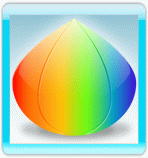
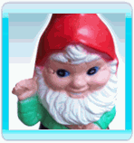
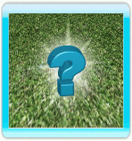

In de Adventure Mode verkent Follie
Elilia - de mysterieuze planeet waar ze met haar noodlanding op terecht is gekomen.
Verplaats Follie naar de aangegeven plaats door de Wii-afstandsbediening op het scherm te richten en op de A-knop te drukken. Als Follie niet naar die plek toe kan, wordt de cursor op de bestemming rood.
Tijdens haar verkenningstocht komt Follie langs verschillende voorwerpen, figuren en plaatsen:
- Flowerwork-zaadjes:
Deze zaadjes zijn door de noodlanding overal verspreid. Verzamel ze om Flowerwork bloemen te zaaien op de zaaiplekken en om toegang te krijgen tot een volgend niveau.
Wanneer Folie een nieuw niveau heeft doorlopen, krijgt ze nieuwe zaadjes als beloning.
- Zaaiplekken:

Op elk van deze oplichtende plekken bevindt zich een nieuw niveau.
Voordat een niveau voor de eerste keer gespeeld kan worden, moet de speler over de juiste zaadjes beschikken. Beweeg over een zaaiplek om te weten te komen welke zaadjes ervoor nodig zijn.
Wanneer een niveau eenmaal voltooid is, kan het onbeperkt opnieuw gespeeld worden (hier zijn geen extra zaadjes voor nodig). Wanneer een niveau is doorlopen, krijgt de speler nieuwe zaadjes en verdient 1-5 sterren.
- Lastige tuinkabouters:
Deze lastige en niet erg behulpzame tuinkabouters blokkeren Follie's doorgang tijdens haar verkenningstocht.
Follie gebruikt haar Sterrenkracht om ze tot rust te brengen, zodat ze Follie er langs laten. Het getal op elke tuinkabouter geeft aan hoeveel Sterrenkracht Follie minimaal nodig heeft om hem tot rust te brengen.
Ga naast een tuinkabouter staan om hem tot rust te brengen.
- Tips:
Tijdens haar verkenningstocht stuit Follie op borden en tips. Deze bieden strategie en tips voor het spel en onthullen ook de achtergrond en geheimen van Elilia.
Ervaren spelers kunnen de tips uitschakelen in het keuzemenu.
- Bewoners:

Soms komt Follie een van de plaatselijke bewoners van Elilia tegen. Zij bieden Follie waardevol advies aan en kunnen haar (in ruil voor munten) een nieuw talent verkopen.
Ga voor een bewoner staan om met hem te praten.
- Munten:
Verzamel de munten, die overal in de wereld verstrooid liggen, door over ze heen te lopen.
Als je een bewoner tegen komt, kan deze je soms een talent te koop aanbieden in ruil voor munten.